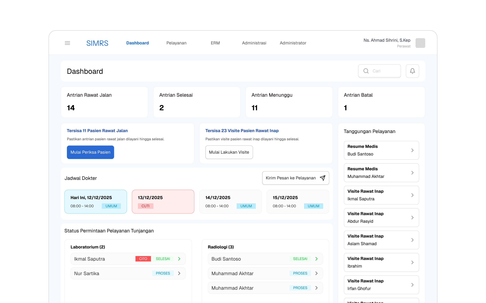
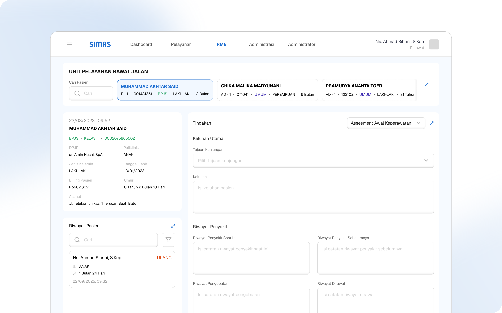
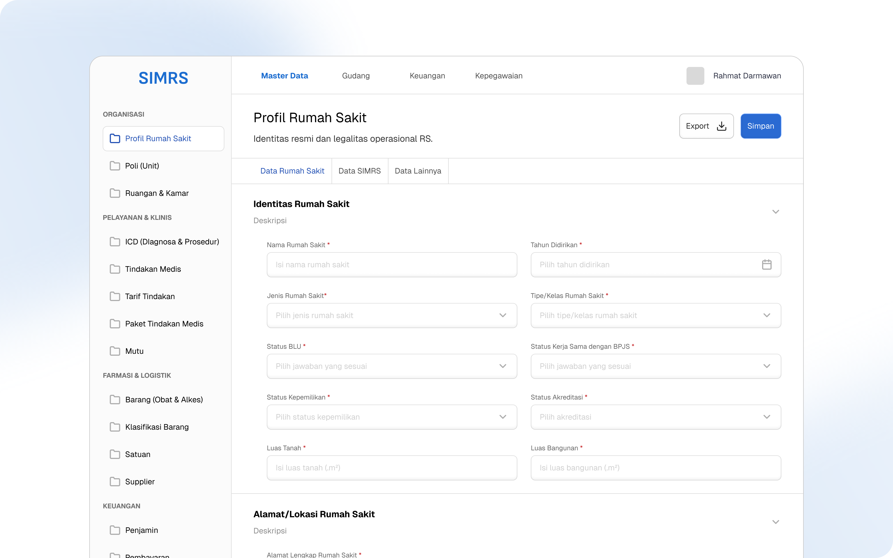

Aistech: Hospital Management System Built to Adapt to Shifting Kemenkes and BPJS Regulations

Client
This was an Aistech product exploration for hospital digitalization, addressing the Ministry of Health's (Kemenkes) mandate for hospitals to adopt a fully digitized information system.
Problem
SIMRS (Hospital Management Information System) needed to cover the full scope of hospital digitalization, from patients and doctors to operations, warehousing, and hospital leadership, with every output structured accurately and without error. The deeper challenge was that Kemenkes and BPJS regulations change every quarter, making it effectively impossible to build a system that could permanently keep pace on its own.
Process
I started by building a standard SIMRS foundation that accommodated the latest Kemenkes and BPJS regulations. Once that foundation was in place, I researched the regulations' historical changes to identify where flexibility actually mattered, and found that most changes landed on claim rules and system-generated outputs. Working with a developer from SIMRS Khanza, I designed a master backoffice where hospital staff could adjust output rules themselves, like claim requirements and RL (Rekapitulasi Laporan) data, without needing a system overhaul every time regulations shifted.
Outcome
An Adaptive Foundation for Regulatory Change
Delivered an ambitious SIMRS architecture built to absorb regulatory change rather than break under it. The direction shifted before the system could be fully tested and refined, when Aistech chose to adopt a government SIMRS product (SIM-GOS) instead of developing this one further.

